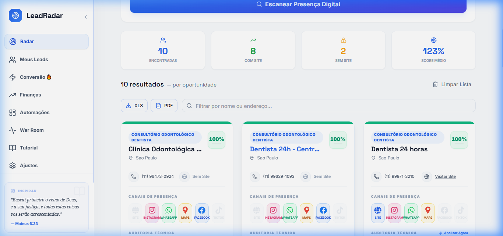
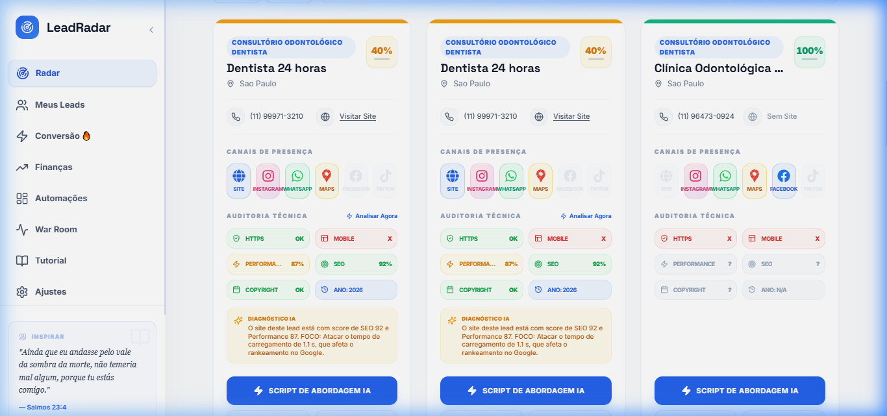
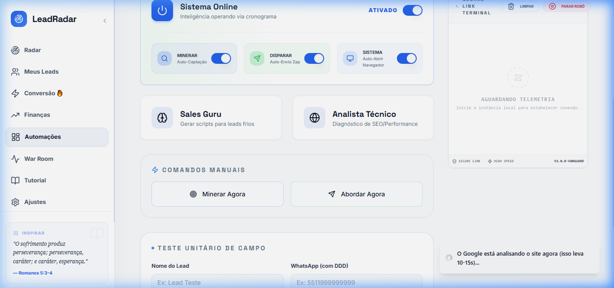

A tecnologia que transforma falhas digitais em oportunidades de ouro. Não é apenas uma ferramenta, é o seu novo arsenal de prospecção.
A jornada começa com a mineração de dados. Configure nichos e cidades para varrer o Google Maps em busca de leads que precisam de você.
Busca simultânea em diversas regiões do país com foco cirúrgico.
Remove concorrentes, franquias gigantes e ruídos automaticamente.


Não chegue como um vendedor chato. Chegue como um especialista técnico. O sistema expõe a velocidade, segurança e falhas estruturais do site do lead em segundos.
O Argumento de Socorro
"Seu site está levando 5 segundos para carregar e o SSL está quebrado. No Google, isso significa que você já perdeu o cliente antes da página abrir. Nós sabemos como resolver agora mesmo."
Não perca seu tempo precioso prospectando empresas que não precisam de você. O NicheFinder Guru classifica cada Lead baseado na urgência técnica.
Nossa Inteligência Artificial avalia a auditoria técnica e cria um script persuasivo com foco na conversão real. Ao mesmo tempo, o sistema desenha um PDF VIP.
Por que fazer as coisas manualmente se você tem o Hunt & Scale? O coração do NicheFinder Guru é seu robô de automação que processa todo o pipeline de prospecção em background.
Busca os contatos sozinhos e checa o PageSpeed enquanto você dorme.
Gera a IA, cria o PDF e chama o lead direto no Zap com um clique mágico.

Simule o comportamento real do Radar e do nosso Motor de IA diretamente nesta apresentação.
Não é sorte. É tecnologia aplicada.
O próximo lead está a um clique de distância.